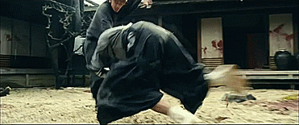

Action

Action film is a genre wherein physical action takes precedence in the storytelling. The film will often have continuous
motion and action including physical stunts, chases, fights, battles, and races. The story usually revolves around a
hero that has a goal, but is facing incredible odds to obtain it.
Action Film Examples:
Die Hard – A New York cop gives terrorists a dose of their own medicine as they hold hostages in an LA office building.
Raiders of the Lost Ark – An adventuring archeologist races around the world to single-handedly prevent the Nazis from turning
the Ark of the Covenant into a weapon of world conquest.